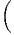

.
.
Nous avons déjà défini la notion de vecteur au point P d’une variété différentiable M ainsi que la notion de champ de vecteurs. L’ensemble des vecteurs au point P se notant TP M, l’ensemble de tous les vecteurs (le fibré tangent) se notant TM et l’ensemble des champs de vecteurs se notant ΓTM, on obtient, par dualité, les notions qui suivent. Tout d’abord l’espace vectoriel dual de TP M se note TP *M ; ses éléments sont donc des formes extérieures de degré 1, ou plus simplement, des “1-formes” . L’ensemble T*M, baptisé fibré cotangent, est l’ensemble de toutes les 1-formes, lorsque le point P décrit M, c’est-à-dire T*M = ∪ p∈MTP *M.
Une forme différentielle (en degré un) est tout simplement un champ de formes extérieures, c’est-à-dire une application qui à tout point P ∈ M associe une forme extérieure en ce point. Nous verrons un peu plus loin la raison d’être de cette terminologie. L’ensemble des formes différentielles de degré 1 peut se noter ΓT*M ou Ω1M.
Toutes les constructions algébriques du paragraphe précédent (tenseurs et
formes extérieures sur un espace vectoriel) sont en particulier valables ici
puisqu’on peut choisir comme espace vectoriel, l’espace vectoriel tangent au point
P, c’est-à-dire TP M. Les tenseurs p fois contravariants, q fois covariants au point
P sont donc des éléments de (TP M)⊗p ⊗ (T
P *M)⊗q. Si on considère tous les
tenseurs de ce type (c’est-à-dire qu’on effectue la réunion de ces espaces lorsque
P décrit M) on obtient (TM)⊗p ⊗ (T*M)⊗q et on peut bien entendu
considérer des champs de tenseurs de ce type, dont l’ensemble constitue
Γ(TM)⊗p ⊗ (T*M)⊗q.
Le cas particulier des tenseurs complètement antisymétriques est particulièrement intéressant. On notera Λ(TP M)* = ⊕ kΛk(T P M)* l’algèbre extérieure sur le dual de l’espace vectoriel TP M et Λ(T*M) = ∪ p∈MΛ(TP M)*.
Les formes différentielles de degré q sont des “sections” de Λq(T*M) c’est-à-dire des champs de formes extérieures de degré q. Leur ensemble peut se noter, bien entendu, ΓΛq(T*M). Lorsque q = 1, on a Λ1(T*M) = T*M. Pour alléger la notation, on décide de poser Ωq(M) = ΓΛq(T*M). On sait que q ne peut pas être trop grand ; plus précisément 0 ≤ q ≤ n avec n = dim M. Attention, ne pas confondre la dimensionalité de Λ(TP M)* – qui est 2n – et celle de ΩM = ⊕q=0nΩqM, qui est infinie. Notons que les éléments de Ω∘M sont simplement les fonctions sur M c’est-à-dire Ω0M = C∞(M). Nous avons déjà étudié les propriétés du produit extérieur et il n’y a rien à rajouter ici : le produit extérieur α ∧ β de deux formes différentielles α et β est obtenu en “globalisant” la définition déjà connue pour chaque point P de M.
ΩM, munie des opérations de multiplication par un scalaire, d’addition et de produit extérieur, devient ainsi une algèbre. Cette algèbre n’est pas commutative mais elle est commutative graduée puisque α∧β = (-1)#α#ββ ∧α où #α désigne le degré de α. On appelle cette algèbre algèbre de De Rham des formes différentielles.
Pour ce qui est de l’écriture locale d’une forme différentielle, il n’y a pas grand-chose à rajouter non plus puisque nous savons déjà décomposer une forme extérieure sur une base de l’espace vectoriel TP *M. Le seul problème qui se pose est de savoir comment la base en question varie avec le point P.
Soient xμ(P) les coordonnées de P dans une carte locale. On sait que l’ensemble des vecteurs eμ = ∂ __ ∂xμ fournit le repère naturel associé à cette carte, c’est-à-dire que {eμ} est une base de l’espace tangent en tout point d’un voisinage de P.
On désignera par {dxμ} la base duale correspondante et on écrira avec des
indices “en haut” {eμ = dxμ}. On peut, si on veut, “visualiser” dxμ par “un petit
accroissement” , mais ceci présente un intérêt purement psychologique ; en effet
dxμ est défini par dualité et donc par la relation ⟨dxμ, ∂__
∂xν⟩ = δνμ. De la même
façon qu’on avait un repère naturel  associé aux coordonnées xμ, on a donc
aussi un corepère naturel {dxμ}.
associé aux coordonnées xμ, on a donc
aussi un corepère naturel {dxμ}.
Dans le cas de l’espace tangent, nous avons défini la notion de repère mobile {eα} (qui était issu de ∂ __ ∂xμ par changement de base arbitraire), nous aurons donc aussi un corepère mobile {eα} défini, en chaque point P de la carte, comme la base duale de {eα}, c’est-à-dire ⟨eα, e β⟩ = δβα.
Venons-en maintenant à la notion de différentielle proprement dite. Pour ce qui est des fonctions (0-formes), on pose bien entendu
La 1-forme df peut être évaluée sur le champ de vecteurs v = vμ ∂ __ ∂xμ. On obtient

La règle de Leibniz usuelle pour la différentielle d’un produit de deux fonctions, à savoir

Nous allons généraliser aussi bien la définition de d que la règle de Leibniz à des formes différentielles de degré supérieur.
Soit ω une k-forme différentielle ; on va définir un opérateur d qui, appliqué à ω, crée une (k + 1)-forme. Cet opérateur est désigné sous le nom de différentielle extérieure ou différentielle de De Rham.
Définition 1. La forme différentielle dω peut se définir directement par son action sur tout (k + 1)-uplet {v1,v2,…,vk+1} de champs de vecteurs, en posant
![k+1
∑ i+1
dω (v1,v2,...,vk+1 ) = (- 1) vi[ω(v1,...,^vi,...,vk+1)]
i=1 ∑
+ (- 1)i+jω([vi,vj],v1,...,^vi,...,^vj,...,vk+1)
i≤i≤j≤k+1](source56x.png)
Cette définition possède un intérêt pratique certain. Pour se rappeler des signes, on peut signaler le moyen mnémotechnique suivant : le premier type de termes s’obtient en faisant passer les vecteurs vi devant ω et en comptant un signe “-” chaque fois que vi “traverse” un des autres vecteurs ; le second type de terme s’obtient en choisissant une paire vi,vj et en la faisant passer en position 1 et 2 de la forme ω, tout en utilisant l’antisymétrie de ω lorsqu’on effectue des transpositions. On remplace alors la paire (vi,vj) par son crochet [vi,vj] et on multiplie le tout par un signe -1.
Exemple 1 : Soit f une 0-forme, c’est à dire une fonction sur M. La définition ci-dessus conduit à
![df(v) = v[f]](source57x.png)
Exemple 2 : Soit ω, une 1-forme, alors
Le lecteur aura reconnu, dans le cas de la dimension 4, l’expression du champ électromagnétique (le tenseur F ) en terme du (quadri) potentiel vecteur ω. Soit dit en passant, il faut incorporer le troisième terme (l’évaluation de ω sur le commutateur [u,v]) lorsqu’on veut exprimer le champ F = dω dans un repère quelconque.
Exemple 3 : Soit ω, une 2-forme, alors
En utilisant la définition de d, donnée ci-dessus, on montre immédiatement que, si ω1 ∈ Ωk1 et ω 2 ∈ Ωk2, alors

De la même façon, on montre que

Les deux propriétés ci-dessus sont absolument fondamentales et peuvent même servir à définir l’opérateur d lui même.
Définition 2. d est l’unique opérateur (application linéaire) de ΩkM dans Ωk+1M tel que, pour tout k, ω 1 ∈ Ωk1, ω 2 ∈ Ωk2, k = k 1 + k2, on ait d(ω1 ∧ ω2) = dω1 ∧ ω2 + (-1)k1ω 1 ∧ dω2 et d2 = 0. En d’autre terme d étend la définition usuelle de différentiation des fonctions en une dérivation graduée de carré nul de l’algèbre ΩM. En physique, si ω désigne le quadri-potentiel vecteur, alors, F = dω obéit automatiquement à l’équation dF = 0, puisque d2 = 0. Ceci nous donne donc la moitié des équations de Maxwell (les équations sans source).
Il existe une troisième définition possible de l’opérateur d, définition qui est également d’un intérêt pratique certain. La voici :
Définition 3. Relativement à un choix de coordonnées on peut écrire ω = ωIdxI, où I est un multi-indice et ωI est une 0-forme, c’est-à-dire une fonction. On définit d’abord d sur les fonctions dωI = ∂ωI ∂xμdxμ. Ensuite, plus généralement, on pose dω = dωI ∧ dxI.
Nous venons de voir trois définitions équivalentes possibles de l’opérateur d. Toutes les trois sont utiles et nous laissons au lecteur le soin de démontrer l’équivalence des définitions.
Terminons par un petit calcul élémentaire (clin d’œil au cours d’électromagnétisme). Soit A = Aμdxμ une 1-forme (le quadri-potentiel vecteur). Le champ de Maxwell est défini par

Ainsi
Soit {eα} un repère mobile et fβγα les fonctions de structure correspondantes, c’est-à-dire que ce repère vérifie l’équation de structure : [eβ,eγ] = fβγαe α.
Soit {eα} le co-repère mobile correspondant défini, comme on l’a vu, par dualité. Le co-repère vérifie également une équation de structure (souvent désignée sous le nom d’équation de Maurer-Cartan)
![de α(e ,e) = e (eα(e )) - e(eα(e )) - eα([e ,e ])
δ ϵ δ α ϵ αϵ δγ α δ ϵ
= e δ(δϵ ) - eϵ(δδ ) - fδϵe (eγ)
= 0 - 0 - f γδα = - fα
δϵ γ δϵ](source66x.png)
D’autre part

Cette opération généralise celle étudiée précédemment (produit intérieur d’une forme extérieure par un vecteur). On associe, à une k forme ω et un vecteur v une k - 1 forme notée ivω. La définition en est très simple : pour une 1-forme, c’est tout simplement l’évaluation. C’est-à-dire ivω = ω(v) = ⟨ω,v⟩. Pour une k-forme, on généralise simplement en contractant l’indice du vecteur v avec le premier indice de la forme ω ; en d’autres termes (et sans utiliser d’indices) ivω est la k - 1 forme définie par